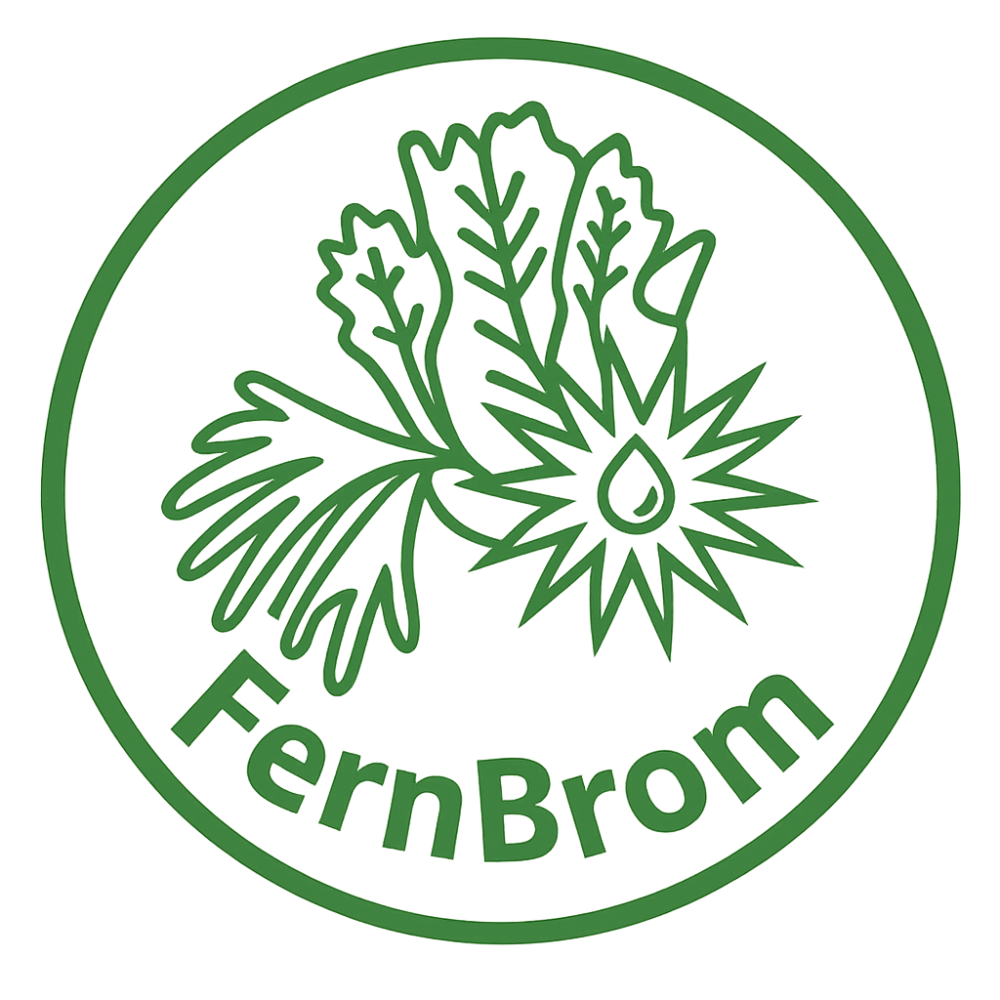

<!-- ========== 共用導覽列元件 nav.html ========== -->
<nav id="mainNav">
  <a href="https://fb-d9pw.onrender.com/index.html" class="logo">
    <div class="logo-mark"></div>
    <div class="logo-text">蕨積<span>FernBrom</span></div>
  </a>
  <ul class="nav-links">
    <!-- 植物選品 -->
    <li class="has-dropdown">
      <a href="shop.html">植物選品</a>
      <ul class="dropdown">
        <li><a href="all.html">所有植物</a></li>
        <li><a href="fern.html">蕨類</a></li>
        <li><a href="brom.html">積水鳳梨</a></li>
        <li><a href="otherplant.html">其他植物</a></li>
      </ul>
    </li>
    <!-- 綠色顧問 -->
    <li class="has-dropdown">
      <a href="consult.html">綠色顧問</a>
      <ul class="dropdown">
        <li><a href="consulting.html">綠色顧問總覽</a></li>
        <li><a href="ghg.html">溫室氣體盤查</a></li>
        <li><a href="greenwall.html">植生牆綠化</a></li>
        <li><a href="lifestyle.html">生活提案</a></li>
      </ul>
    </li>
    <!-- 蕨望筆記 -->
    <li class="has-dropdown">
      <a href="fbnote.html">蕨望筆記</a>
      <ul class="dropdown">
        <li><a href="note.html">生活隨筆</a></li>
        <li><a href="forever.html">永續日常</a></li>
        <li><a href="netzero.html">淨零生活</a></li>
        <li><a href="greenlab.html">綠色實驗室</a></li>
      </ul>
    </li>
    <li><a href="about.html">關於蕨積</a></li>
    <li><a href="contact.html" class="nav-contact">聯絡我們</a></li>
  </ul>
  <button class="hamburger" id="hamburger" aria-label="開啟選單"><span></span><span></span><span></span></button>
</nav>

<!-- 行動選單 -->
<div class="mobile-menu" id="mobileMenu">
  <ul>
    <li>
      <div class="mobile-parent" data-target="sub-plant">
        植物選品
        <span class="mobile-caret">▼</span>
      </div>
      <ul class="mobile-sub" id="sub-plant">
        <li><a href="all.html">所有植物</a></li>
        <li><a href="fern.html">蕨類</a></li>
        <li><a href="brom.html">積水鳳梨</a></li>
        <li><a href="otherplant.html">其他植物</a></li>
      </ul>
    </li>
    <li>
      <div class="mobile-parent" data-target="sub-green">
        綠色顧問
        <span class="mobile-caret">▼</span>
      </div>
      <ul class="mobile-sub" id="sub-green">
        <li><a href="consulting.html">綠色顧問總覽</a></li>
        <li><a href="ghg.html">溫室氣體盤查</a></li>
        <li><a href="greenwall.html">植生牆綠化</a></li>
        <li><a href="lifestyle.html">生活提案</a></li>
      </ul>
    </li>
    <li>
      <div class="mobile-parent" data-target="sub-note">
        蕨望筆記
        <span class="mobile-caret">▼</span>
      </div>
      <ul class="mobile-sub" id="sub-note">
        <li><a href="note.html">生活隨筆</a></li>
        <li><a href="forever.html">永續日常</a></li>
        <li><a href="netzero.html">淨零生活</a></li>
        <li><a href="greenlab.html">綠色實驗室</a></li>
      </ul>
    </li>
    <li><a href="about.html">關於蕨積</a></li>
    <li><a href="contact.html">聯絡我們</a></li>
  </ul>
</div>

<style>
  /* 導覽列樣式 */
  nav {
    position: fixed;
    top: 0;
    left: 0;
    right: 0;
    z-index: 100;
    display: flex;
    align-items: center;
    justify-content: space-between;
    padding: 0 4vw;
    height: 72px;
    background: rgba(250,247,242,0.92);
    backdrop-filter: blur(12px);
    border-bottom: 1px solid rgba(90,122,74,0.12);
  }
  
  .logo {
    display: flex;
    align-items: center;
    gap: 10px;
    text-decoration: none;
  }
  
  .logo-text {
    font-family: 'Noto Serif TC', serif;
    font-weight: 900;
    font-size: 1.35rem;
    color: #3d5a38;
  }
  
  .logo-text span {
    display: block;
    font-size: 0.65rem;
    color: #9a9080;
  }
  
  .nav-links {
    display: flex;
    gap: 2rem;
    list-style: none;
    margin: 0;
    padding: 0;
  }
  
  .nav-links li {
    position: relative;
    list-style: none;
  }
  
  .nav-links a {
    font-family: 'Noto Sans TC', sans-serif;
    font-size: 0.82rem;
    font-weight: 400;
    letter-spacing: 0.1em;
    color: #1a1a14;
    text-decoration: none;
    padding: 8px 0;
    display: inline-block;
    opacity: 0.75;
  }
  
  .nav-links a:hover {
    opacity: 1;
    color: #5a7a4a;
  }
  
  .nav-contact {
    padding: 8px 20px !important;
    border: 1px solid #5a7a4a !important;
    border-radius: 2px;
    color: #5a7a4a !important;
    opacity: 1 !important;
  }
  
  /* 下拉選單 - 加入緩衝區解決消失問題 */
  .has-dropdown {
    position: relative;
  }
  
  /* 隱藏緩衝區 - 連接主選單和下拉選單 */
  .has-dropdown::after {
    content: '';
    position: absolute;
    bottom: -15px;
    left: 0;
    width: 100%;
    height: 20px;
    background: transparent;
    z-index: 101;
  }
  
  .dropdown {
    position: absolute;
    top: calc(100% - 5px);
    left: 50%;
    transform: translateX(-50%);
    min-width: 160px;
    background: rgba(250,247,242,0.98);
    backdrop-filter: blur(16px);
    border: 1px solid rgba(90,122,74,0.14);
    border-top: 2px solid #5a7a4a;
    box-shadow: 0 12px 28px rgba(61,90,56,0.12);
    border-radius: 8px;
    padding: 8px 0;
    list-style: none;
    margin: 0;
    opacity: 0;
    visibility: hidden;
    transition: opacity 0.15s ease, visibility 0.15s ease;
    z-index: 1000;
  }
  
  /* 滑鼠懸停時顯示 */
  .has-dropdown:hover .dropdown {
    opacity: 1;
    visibility: visible;
  }
  
  /* 下拉選單也加入緩衝區向上延伸 */
  .dropdown::before {
    content: '';
    position: absolute;
    top: -12px;
    left: 0;
    width: 100%;
    height: 12px;
    background: transparent;
  }
  
  .dropdown li {
    list-style: none;
  }
  
  .dropdown li a {
    display: block;
    padding: 8px 20px;
    font-size: 0.75rem;
    white-space: nowrap;
  }
  
  .dropdown li a:hover {
    background: rgba(90,122,74,0.08);
    padding-left: 26px;
  }
  
  /* 手機版樣式 */
  .hamburger {
    display: none;
    flex-direction: column;
    gap: 6px;
    background: none;
    border: none;
    cursor: pointer;
  }
  
  .hamburger span {
    width: 24px;
    height: 2px;
    background: #3d5a38;
    transition: 0.2s;
  }
  
  .hamburger.open span:nth-child(1) {
    transform: rotate(45deg) translate(5px, 5px);
  }
  
  .hamburger.open span:nth-child(2) {
    opacity: 0;
  }
  
  .hamburger.open span:nth-child(3) {
    transform: rotate(-45deg) translate(7px, -6px);
  }
  
  .mobile-menu {
    position: fixed;
    top: 72px;
    left: 0;
    right: 0;
    background: #faf7f2;
    padding: 20px;
    transform: translateX(100%);
    transition: transform 0.3s;
    z-index: 99;
    border-bottom: 1px solid rgba(90,122,74,0.15);
  }
  
  .mobile-menu.open {
    transform: translateX(0);
  }
  
  .mobile-parent {
    display: flex;
    justify-content: space-between;
    align-items: center;
    padding: 12px 0;
    cursor: pointer;
    font-weight: 500;
    border-bottom: 1px solid rgba(90,122,74,0.1);
  }
  
  .mobile-caret {
    transition: transform 0.2s;
  }
  
  .mobile-caret.open {
    transform: rotate(180deg);
  }
  
  .mobile-sub {
    max-height: 0;
    overflow: hidden;
    transition: max-height 0.3s ease;
    padding-left: 16px;
  }
  
  .mobile-sub.open {
    max-height: 300px;
  }
  
  .mobile-sub li {
    list-style: none;
  }
  
  .mobile-sub li a {
    display: block;
    padding: 10px 0;
    text-decoration: none;
    color: #9a9080;
    border-bottom: 1px solid rgba(90,122,74,0.05);
  }
  
  .mobile-sub li a:hover {
    color: #5a7a4a;
  }
  
  @media (max-width: 768px) {
    .nav-links {
      display: none;
    }
    .hamburger {
      display: flex;
    }
  }
</style>

<script>
  // 手機選單控制
  (function() {
    // 確保 DOM 載入完成
    function initMobileMenu() {
      const hamburger = document.getElementById('hamburger');
      const mobileMenu = document.getElementById('mobileMenu');
      
      if (hamburger && mobileMenu) {
        // 移除可能重複的事件監聽
        const newHamburger = hamburger.cloneNode(true);
        hamburger.parentNode.replaceChild(newHamburger, hamburger);
        const newMobileMenu = mobileMenu.cloneNode(true);
        mobileMenu.parentNode.replaceChild(newMobileMenu, mobileMenu);
        
        const finalHamburger = document.getElementById('hamburger');
        const finalMobileMenu = document.getElementById('mobileMenu');
        
        finalHamburger.addEventListener('click', function(e) {
          e.stopPropagation();
          finalHamburger.classList.toggle('open');
          finalMobileMenu.classList.toggle('open');
        });
      }
      
      // 手機版下拉選單
      document.querySelectorAll('.mobile-parent').forEach(parent => {
        const newParent = parent.cloneNode(true);
        parent.parentNode.replaceChild(newParent, parent);
        
        newParent.addEventListener('click', function(e) {
          e.stopPropagation();
          const targetId = this.getAttribute('data-target');
          const subMenu = document.getElementById(targetId);
          const caret = this.querySelector('.mobile-caret');
          
          if (subMenu) {
            subMenu.classList.toggle('open');
            if (caret) caret.classList.toggle('open');
          }
        });
      });
    }
    
    if (document.readyState === 'loading') {
      document.addEventListener('DOMContentLoaded', initMobileMenu);
    } else {
      initMobileMenu();
    }
  })();
</script>
